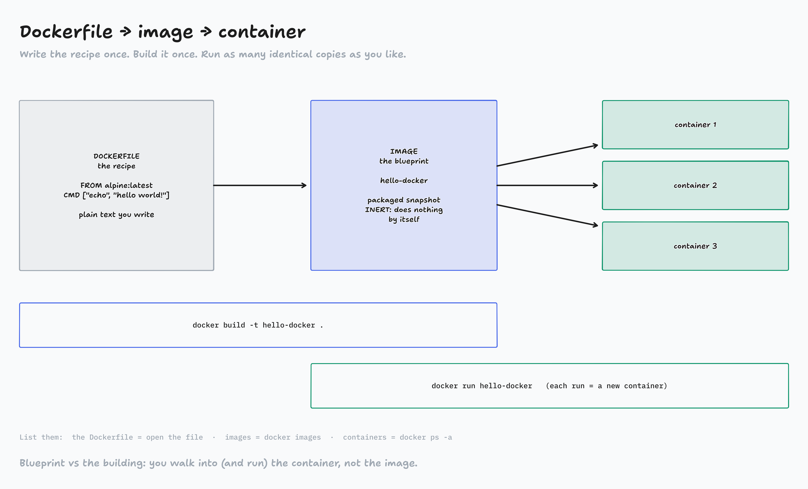
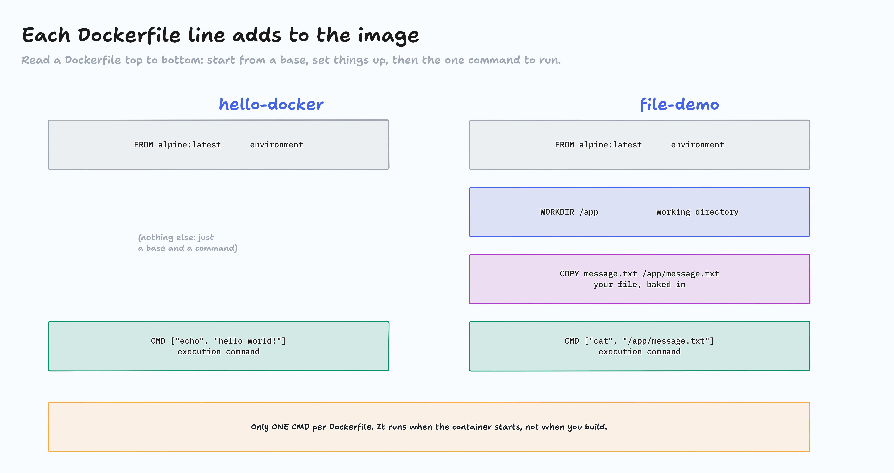
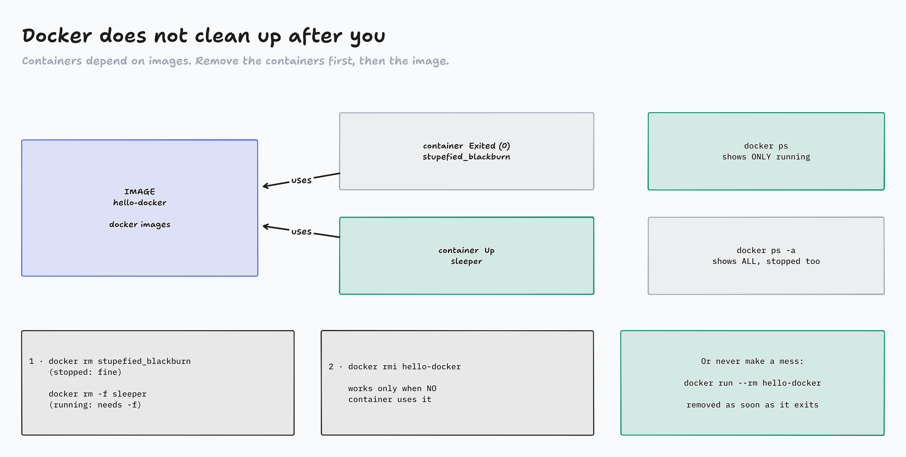
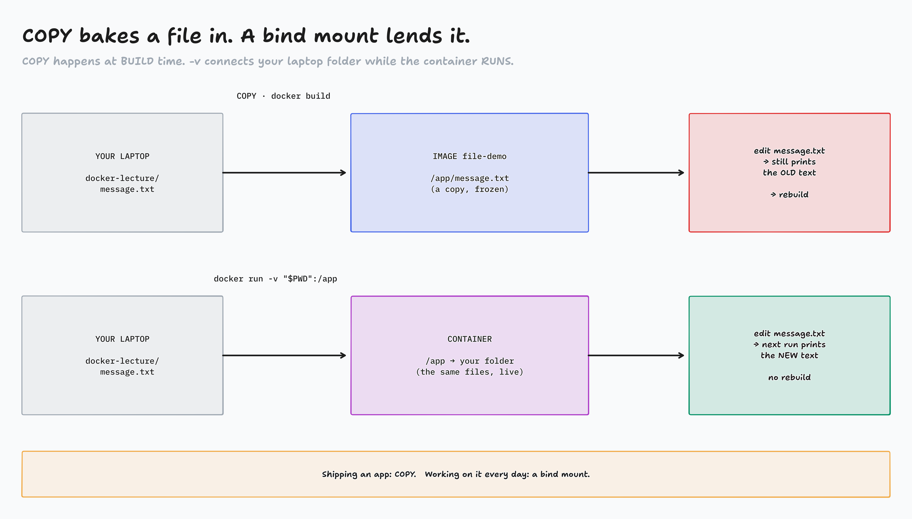

Write a Dockerfile, build your own image, run it, look inside, clean up, and automate it. All in your terminal.
Lecture 1: other people's images. Today: yours.
$ mkdir docker-lecture
$ cd docker-lecture
$ code . # or open the folder in your editor
Keep the terminal and the editor side by side
Every command is on the class site: Terminal Lab 2, with Copy buttons
By the end: a Dockerfile, two images, and a script that does it all for you.

diagrams/DK2-01-pipeline.tldr
YOUR EDITOR · Lab step 1
Your first Dockerfile
docker-lecture/Dockerfile (no extension)
FROM alpine:latest
CMD ["echo", "hello world!"]
FROM
Start from an image already published on Docker Hub. Docker pulls it, then runs the rest of the file.
CMD
The command that runs when the container starts. A list of strings. Only one per Dockerfile.
A Dockerfile is not magic: every line is an instruction you can read.
YOUR TERMINAL · Lab step 2
Build it, find it, run it
$ docker build -t hello-docker .
#4 [1/1] FROM docker.io/library/alpine:latest
#5 naming to docker.io/library/hello-docker done$ docker images
IMAGE ID DISK USAGE
hello-docker:latest 2a10af81544d 8.42MB$ docker run hello-docker
hello world!
The two flags
-t hello-docker = tag: a readable name for the image
. = "use the Dockerfile in this folder". Don't forget the dot!
You just did all three
Dockerfile → build → image → run → container
YOUR EDITOR + TERMINAL · Lab step 3
Put a file inside the image
message.txt
Hello from inside the container.
Dockerfile (replace it)
FROM alpine:latest
WORKDIR /app
COPY message.txt /app/message.txt
CMD ["cat", "/app/message.txt"]
$ docker build -t file-demo .
#6 [2/3] WORKDIR /app
#7 [3/3] COPY message.txt /app/message.txt$ docker run file-demo
Hello from inside the container.
WORKDIR /app = make and go into /app inside the image
COPY a b = from your folder → into the image (COPY . /app/ = everything)

diagrams/DK2-02-container-state.tldr
YOUR TERMINAL · Lab step 4
Look inside your own image
$ docker run -it --rm file-demo sh
/app # pwd
/app← WORKDIR/app # ls
message.txt← COPY/app # cat message.txt
Hello from inside the container./app # exit
What happened?
Adding sh at the end replaces the CMD for this one run
You start in /app because of WORKDIR
This is how you debug: "is my file really in there?"
If you can't see it, open a shell and look.

diagrams/DK2-03-cleanup.tldr
YOUR TERMINAL · Lab step 5
Where did my containers go?
$ docker ps
CONTAINER ID IMAGE … STATUS NAMES← empty?!$ docker ps -a
CONTAINER ID IMAGE … STATUS NAMES
2c35db8c8953 file-demo … Exited (0) affectionate_shaw
a239a14bf944 hello-docker … Exited (0) stupefied_blackburn$ docker rm stupefied_blackburn # use YOUR namestupefied_blackburn$ docker run -d --name sleeper alpine sleep 300
$ docker rm sleeper
Error response from daemon: cannot remove container "sleeper":
container is running: stop the container before removing
or force remove$ docker rm -f sleeper
sleeper
Three ways
docker rm name stopped container
docker rm -f name running: stop + remove. Use on purpose!
docker run --rm image removed as soon as it exits: no mess
YOUR TERMINAL · Lab step 6
Why won't my image delete?
$ docker rmi file-demo
Error response from daemon: conflict: unable to remove
repository reference "file-demo" (must force) - container
2c35db8c8953 is using its referenced image b350f29a4f26$ docker rm affectionate_shaw # 1 · the container$ docker rmi file-demo # 2 · then the imageUntagged: file-demo:latest
Deleted: sha256:b350f29a4f26…$ docker images # gone
The rule
Images can't be removed while a container depends on them
Order: stop → remove the container → remove the image
Same tag again?
docker build -t file-demo . twice moves the name to the new image. The old one stays (untagged) until nothing uses it.
Activity: Which command?
A situation in your terminal appears
In chat on "go": the command (or flag) you'd type
Bonus: what would you see?
Page: activity-which-command/

diagrams/DK2-04-copy-vs-mount.tldr
YOUR TERMINAL · Lab step 7
Edit on your laptop, no rebuild
$ docker build -t file-demo .
# edit message.txt in your editor, save:# Edited on my laptop.$ docker run --rm file-demo
Hello from inside the container.← old (COPY)$ docker run --rm -v "$PWD":/app file-demo
Edited on my laptop.← live!
Read the flag
-v "$PWD":/app my current folder → /app in the container
PowerShell: -v "${PWD}:/app"
Git Bash: put MSYS_NO_PATHCONV=1 before docker
YOUR EDITOR + TERMINAL · Lab step 8
Stop retyping: run.sh
#!/usr/bin/env bash
set -e
# variables you may update to target the correct file
IMAGE_NAME="lecture2-demo"
CONTAINER_NAME="lecture2-container"
# this will rebuild the image within the docker engine
echo "Building image: $IMAGE_NAME"
docker build -t "$IMAGE_NAME" .
# this will run the container and automatically remove it upon completion
echo "Running container with bind mount..."
docker run --rm --name "$CONTAINER_NAME" "$IMAGE_NAME"
$ ./run.sh
bash: ./run.sh: Permission denied$ chmod +x run.sh
$ ./run.sh
Building image: lecture2-demo
…
Running container with bind mount...
Edited on my laptop.
Windows: run it in Git Bash or WSL, not PowerShell or Command Prompt
Two tools you'll need for the homework
Task 3 · environment variables
ENV NAME="value" in a Dockerfile sets one
docker run --rm -e NAME="other" image overrides it (the stretch)
Watch out:CMD ["echo", "$NAME"] prints $NAME literally. The list form doesn't run a shell, so nothing swaps the variable in. sh -c "…" does.
Task 4 · a script
COPY the script in, then run it with its interpreter: sh or python
Watch out:CMD ["./hello.sh"] on a file without execute permission:
exec: "./hello.sh": permission denied
Same lesson as run.sh.
Homework, Part II
Priority 1, Docker Fundamentals assignment: Tasks 1–4, each in its own folder, every run with --rm. Then the resource checklist and its 3 questions
Priority 2, FreeCodeCamp: 50 steps of your current certification
You can now
write a Dockerfile · build · run · look inside with sh · ps -a · rm · rmi · --rm · -v · automate with run.sh